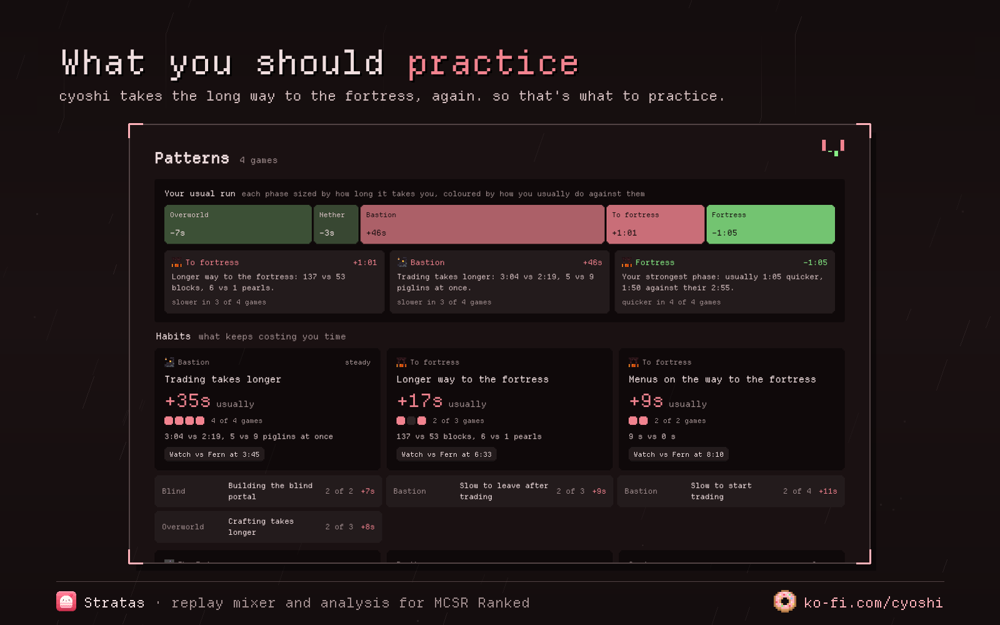

Practice against any Elo you want, on the same seed.
Stratas finds a run from a player at the Elo you pick. You play that seed in a private room, then it mixes both replays into one file, so you're both in the same world in Ranked's own replay viewer. No Elo on the line, as many tries as you like.
Free. Nothing gets uploaded, your replays stay on your computer.

The gap, phase by phase
Where you gained and lost, on a graph you can zoom into.
Why you lost time
In plain words: "7 piglins stuck on gold", "longer way to the fortress", "15 s crafting".
Every trade, craft, pearl and rod
Side by side with theirs, item by item.
Deaths and what they cost
How long you were gone and what you dropped.
The End
Zero cycles, failed cycles, each perch and the dragon kill.
Your habits
After a few games, the things that keep losing you time.



The app
Everything, automatically. It finds your Ranked folder, picks up new replays the moment Ranked saves them, mixes races straight into My replays and tells you when a game is ready. Plus the companion window over the game, quick splits right after a private room run, and updates with one click.
The Windows installer isn't signed yet, so Windows shows a "Windows protected your PC" popup. Click More info, then Run anyway. Signing is applied for through the free SignPath Foundation.
In your browser
A taste, nothing to install. Your profile and splits, Find runs, and full races from replays you add yourself. You drop the .rrf files in, and download the mixed replay to put in Ranked's folder. Everything stays in your browser.
The app has all the features. The browser version can't see your Ranked folder, so it can't do anything on its own.